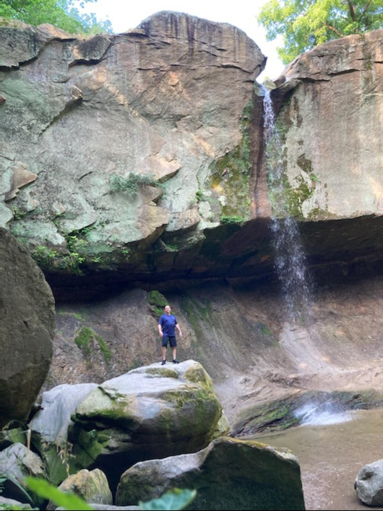

Ohhh, where to even begin...
I'm old enought that we rode to the grocery store in the back of a pick-up truck without issue, and only professional cyclists wore helmets when riding a bike. Growing up the oldest of 5, I have 2 brothers and 2 sisters, and my were things different. At age 11, I was changing diapers and riding my bike to the store for bread or milk. In hindsight, this childhood set up the foundation of who I would become, though I wish I'd seen the path at a much earlier age.
I have no children of my own, which permits me to be "Cool Uncle Nate."

Never married, and an inventor and entrepreneur at heart, the abscence of responsibilities to others, that would otherwise hinder such luxuries as chasing dreams, has left me the freedom to chase those very dreams. I spend time on myself keeping fit. I've started a company, and failed, and lived in my car for 4 years, finding both freedom and self-perseverance to chase dreams even further. I've written books, and a screenplay, and have several pending patents, while the protypes remain in pieces scattered about the house.
Family is my only anchor, to both a social structure as well as importance and purpose.My father suffers from Guillain-Barré syndrome which has developed into CIDP (Chronic inflammatory demyelinating polyneuropathy) and has rendered him paralyzed. A tragic twist of fate that keeps the family close.
Aside from my inventions and prototype developement, I find odd pleasure in growing 4-leaf clovers, a tribute to the wishful dreams of my underpriviledged childhood, and find solace in hiking, and just the simple peace that comes from all things nature. I guard my peace cautiously. If I give of my time, it is by choice.